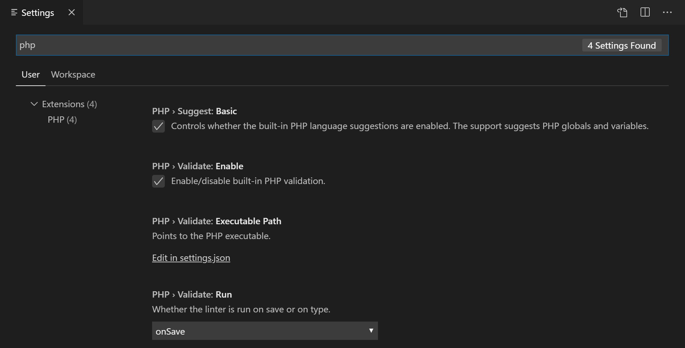
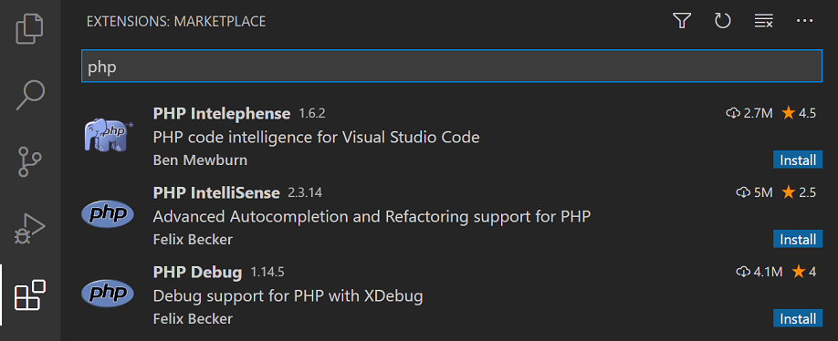

PHP in Visual Studio Code
Visual Studio Code is a great editor for PHP development. You get features like syntax highlighting and bracket matching, IntelliSense (code completion), and snippets out of the box and you can add more functionality through community-created VS Code extensions.
Linting
VS Code uses the official PHP linter (php -l) for PHP language diagnostics. This allows VS Code to stay current with PHP linter improvements.
Tip: Using XAMPP? Install the full version of PHP in order to obtain the development libraries.
There are three settings to control the PHP linter:
php.validate.enable: controls whether to enable PHP linting at all. Enabled by default.php.validate.executablePath: points to the PHP executable on disk. Set this if the PHP executable is not on the system path.php.validate.run: controls whether the validation is triggered on save (value:"onSave") or on type (value:"onType"). Default is on save.
To change the PHP settings, open your User or Workspace Settings (kb(workbench.action.openSettings)) and type 'php' to filter the list of available settings.

To set the PHP executable path, select the Edit in settings.json link under PHP > Validate: Executable Path, which will open your user settings.json file. Add the php.validate.executablePath setting with the path to your PHP installation:
Windows:
{
"php.validate.executablePath": "c:/php/php.exe"
}
Linux and macOS:
{
"php.validate.executablePath": "/usr/bin/php"
}
Snippets
Visual Studio Code includes a set of common snippets for PHP. To access these, hit kb(editor.action.triggerSuggest) to get a context-specific list.

PHP extensions
There are many PHP language extensions available on the VS Code Marketplace and more are being created. You can search for PHP extensions from within VS Code in the Extensions view (kb(workbench.view.extensions)) then filter the extensions dropdown list by typing 'php'.

Disable built-in PHP support
To disable the built-in PHP smart completions in favor of suggestions from an installed PHP extension, uncheck PHP > Suggest: Basic, which sets php.suggest.basic to false in your settings.json file.
Debugging
PHP debugging with XDebug is supported through a PHP Debug extension. Follow the extension's instructions for configuring XDebug to work with VS Code.
Next steps
Read on to find out about:
- Extension Marketplace - Browse the extensions others have shared
- Debugging - Learn more about VS Code debugging